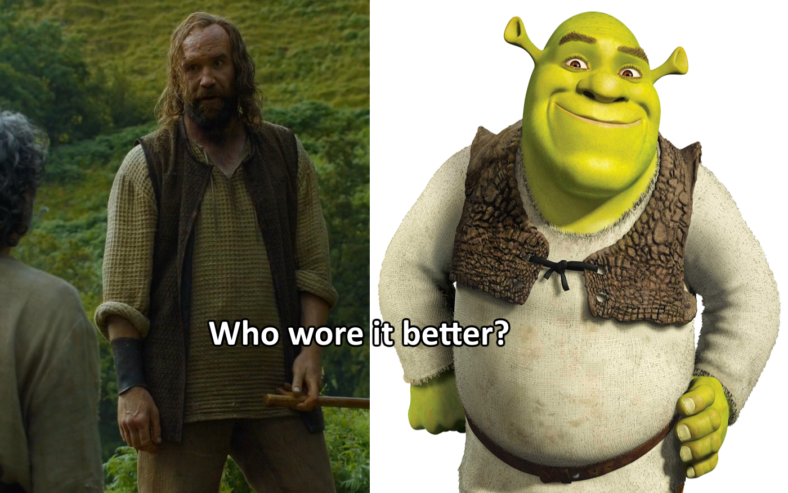

Fun StuffDank
Game of Thrones is roughly based on the storylines of A Song of Ice and Fire, set in the fictional Seven Kingdoms of Westeros and the continent of Essos. The series chronicles the violent dynastic struggles among the realm's noble families for the Iron Throne, while other families fight for independence from it. It opens with additional threats in the icy North and Essos in the east.
Showrunner David Benioff jokingly suggested "The Sopranos in Middle-earth" as Game of Thrones' tagline, referring to its intrigue-filled plot and dark tone in a fantasy setting of magic and dragons. In a 2012 study of deaths per episode, it ranked second out of 40 recent U.S. TV drama series (with an average of 14)
The series is generally praised for what is perceived as a sort of medieval realism. George R.R. Martin set out to make the story feel more like historical fiction than contemporary fantasy, with less emphasis on magic and sorcery and more on battles, political intrigue, and the characters, believing that magic should be used moderately in the epic fantasy genre. Martin has stated that "the true horrors of human history derive not from orcs and Dark Lords, but from ourselves."
A common theme in the fantasy genre is the battle between good and evil, which Martin says does not mirror the real world. Just like people's capacity for good and for evil in real life, Martin explores the questions of redemption and character change. The show allows the audience to view different characters from their perspective, unlike in many other fantasies, and thus the supposed villains can provide their side of the story. Benioff said, "George brought a measure of harsh realism to high fantasy. He introduced gray tones into a black-and-white universe."
In early seasons, under the influence of the A Song of Ice and Fire books, main characters were regularly killed off, and this was credited with developing tension among viewers. Later seasons, however, critics pointed out that certain characters had developed "plot armor", attributing this to the show's deviating from the books and becoming more of a traditional television series. The series also reflects the substantial death rates in war.
